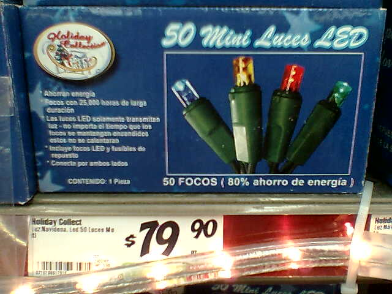
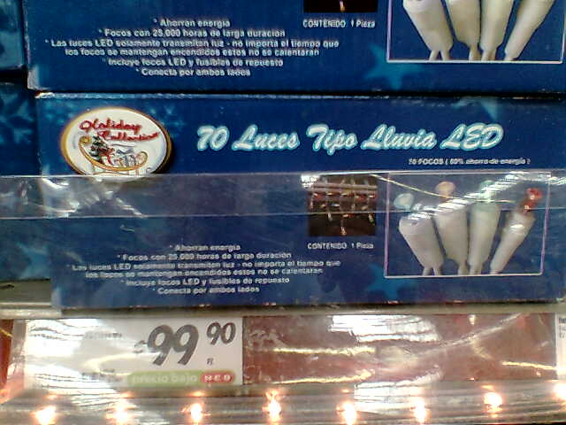
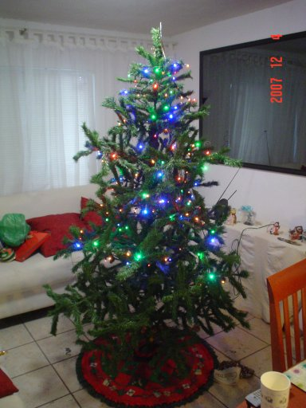
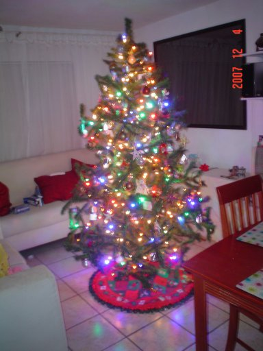

Navidad a la LED... ¡que caro!
Guillermo Valdés Lozano (guivaloz)
2007-12-05 10:55:00-06:00
"¡Papá! ¡ya falta poco para Navidad!" dice mi hija "¿Cuándo vamos a poner el arbolito? ¿cuándo vamos a comprar cosas para Navidad?" Esas palabras vinendo de la niña más dulce del mundo se contraponen a la labor (que veo venir, e inevitablemente llegará) de bajar todas las empolvadas cajas con las cosas navideñas de los años pasados. Propuse un trato, esa noche bajaríamos las cajas y mañana armarían (Mamá y Tú) el pinito.
Al día siguiente... "Debemos comprar focos para el pino." ¿Eh?.. ¿Qué le pasó a los focos del año pasado? XD... Vino la explicación: "El año pasado se puso medio pino, ahora vamos a poner el pino completo, NECESITAMOS más foquitos". Este pino artificial tiene un tubo central con dos segmentos, así que puede ponerse sólo uno, logrando que la altura sea de la mitad. Pero este año el pino va a ser completo. "Bueno, vamos mañana al super".
Recordé el post de LinuxMan titulado Navidad a la LED el cual planteaba la pregunta "¿Por qué no hacen series navideñas con tecnología LED?". Como muchos de Ustedes (supongo), ando contagiado con la enfermedad del ecologista y trato que mis compras sean lo menos perjudiciales a nuestro planeta. Pero reconozco que no puedo dejar de comprar esos prácticos platos y vasos desechables, que tanto me ayudan a no lavar platos XD.

Vaya gusto que me dió encontrar en el supermercado series de luces navideñas con leds en vez de focos incandecentes. La pequeña caja presume que estas luces duran miles y miles de horas, no se calientan (lo cual reduce el riesgo de incendio) y que consumen unos cuantos míseros watts. Pero... ¡Cuestan más del doble que los incandecentes! e íbamos a comprar ¡4 cajas! (por que tienen la mitad de luces que las series incandecentes) dando un total de casi ¡$320 pesos!.

"Bueno, todo sea en pro de la ecología". Como he visto dos veces el documental Una Verdad Incómoda me pareció (en ese momento) que el gasto lo valía y que sería un buen ejemplo para sermonear a mi hija.

Al siguiente día, antes de llegar a casa, recibo un mensaje que decía "No alcanzaron los foquitos." ¿Queeee? ¿200 foquitos no alcanzaron? achis ¿Qué? ¿Apoco creció el pino (artificial) durante el año que pasó guardado? XD... Pues sí... Esta es la foto de un pino que no creció con 200 leds ecológicos y $320 pesos de inversión.

"¿Cómo vez? ¿compraremos más series de luces led? ¿o le agregamos una serie de focos incandecentes del año pasado?". Mi dolida cartera ya no pudo más, y optamos por la segunda opción. El arbolito navideño quedó muy bonito, excelente labor de mi mujer y mi hija, al que hemos bautizado como nuestro pino navideño híbrido, mitad leds, mitad focos incandecentes.
Esperaré a que pongan en remate las series leds para comprar un par más :D.